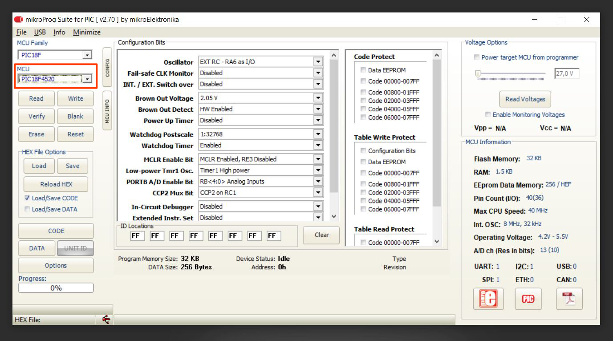
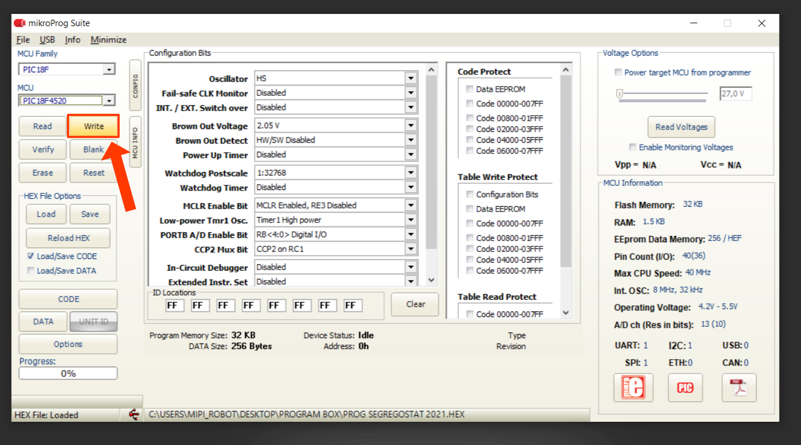
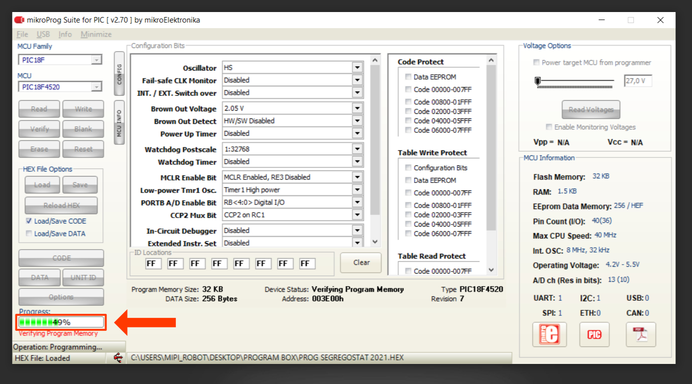

7. First power up
Step 1: Power switch
It's time to try if everything is good, plug the power cable into the power Supply and connect it to the Segregostat. Now press the switch On Off and check if all pumps and relays are working properly as shown in the video below. The original program of the motherboard activates the relays one by one which is perfect to see if everything is well connected.
If you have problems with pumps that don't run, you need to shut down quickly and check the electrical wiring to avoid short circuits.
Step 2: Upload the PLC program
Now we need to upload the program inside the PLC (motherboard) to enable the communication between the segregostat and the software from the computer.
-
Plug usb cable from the Segregostat to the computer and start the mikroProg Suite For PIC.
-
Inside the software select the good MCU : PIC18F4520

-
Load the program.hex
-
Upload the program inside the motherboard simply by pressing the "Write" button.

-
Wait few seconds, the pumps should stop running and you should no longer hear the relays.
